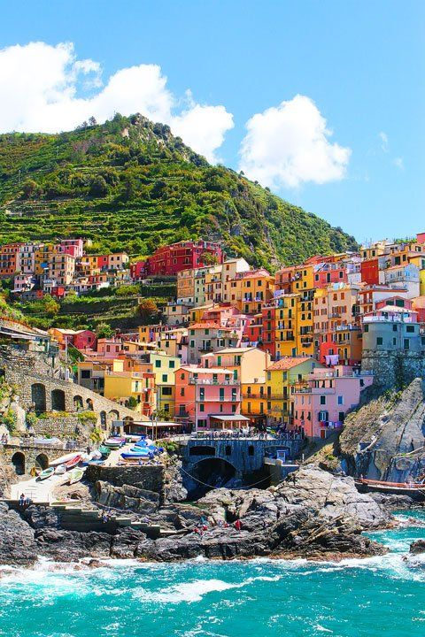

Take a map or just go to google look for a websites that can lead you to pretty much great destinations or some nice places with adventures
Select a place, country or both as you like
Here's Some Country sides And places You Might Visit!!
Europe|

Cinque Terre, Italy:
Indulge in the charm of Italy's Cinque Terre, a string of colorful coastal villages clinging to the cliffs overlooking the Ligurian Sea.
Hike the scenic trails connecting Monterosso to Riomaggiore,
savoring panoramic views of vineyards, olive groves,
and the sparkling Mediterranean. Each village is a postcard come to life,
offering a taste of authentic Italian coastal living.
Europe|
Hallstatt, Austria:
Nestled beside a pristine alpine lake and surrounded by the Dachstein Alps,
Hallstatt is a fairytale village that seems frozen in time.
Wander through its narrow cobblestone streets,
admire pastel-hued houses reflected in the lake,
and explore the world's oldest salt mine
. Hallstatt is a symphony of natural beauty and cultural heritage.
Europe|
Barcelona, Spain:
Immerse yourself in the vibrant energy of Barcelona,
where modernist architecture meets ancient Gothic charm.
Explore the whimsical creations of Antoni Gaudí,
stroll down La Rambla for a taste of Catalan culture,
and savor tapas in the bustling Boqueria Market.
The city's artistic spirit and Mediterranean flair are bound
to ignite your sense of adventure.
Europe|
Swiss Alps, Switzerland:
Embark on a high-altitude adventure in the Swiss Alps,
where majestic peaks, pristine lakes, and charming mountain villages await.
Whether you're skiing in Zermatt with a view of the Matterhorn or hiking in the Jungfrau region,
the Alps provide a playground for outdoor enthusiasts year-round. Swiss hospitality and the
stunning alpine scenery create an unforgettable experience.
North America|
North America and Canada:
Banff National Park, Canada:
Discover the untamed beauty of Banff National Park, where emerald lakes,
rugged mountains, and glaciers form a breathtaking panorama.
Whether you're canoeing on Lake Louise, hiking the Plain of Six Glaciers Trail,
or spotting wildlife along the Icefields Parkway,
Banff is a haven for nature lovers and adventure seekers.
North America|
Grand Canyon, USA:
Stand on the edge of wonder at the Grand Canyon,
a colossal masterpiece carved by the Colorado River.
Hike the rim trails for panoramic views,
take a helicopter tour for a bird's-eye perspective,
or raft the Colorado River for a thrilling adventure through the canyon's depths.
The Grand Canyon is a testament to the Earth's geological history and a must-see destination.
North America|
Quebec City, Canada:
Step into the enchanting streets of Old Quebec City,
where cobblestone alleys and historic architecture transport you to a European ambiance in North America.
Explore the iconic Château Frontenac, wander through Place Royale,
and experience the charm of Petit-Champlain.
Quebec City is a living tapestry of French-Canadian culture and history.
North America|
Yosemite National Park, USA:
Immerse yourself in the natural wonders of Yosemite National Park,
where towering waterfalls, ancient sequoias,
and granite cliffs redefine your sense of awe. Hike to the summit of Half Dome,
marvel at the beauty of Yosemite Valley, and witness the play of light on El Capitan.
Yosemite is a sanctuary for outdoor enthusiasts and a showcase of Mother Nature's grandeur.


.jpg)